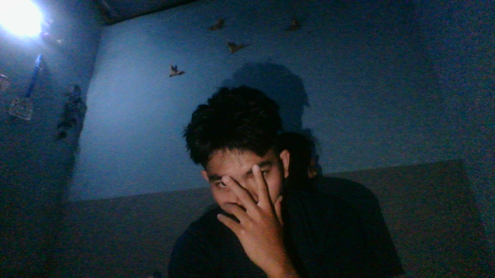

Elektronika
Dasar elektronika, komponen, rangkaian, dan pengukuran.
Mahasiswa Teknik Elektro yang tertarik pada teknologi mikrokontroler, elektronika, Internet of Things, dan inovasi teknologi. Saya terus belajar untuk menciptakan proyek yang bermanfaat.

Perjalanan saya dalam mempelajari teknologi.
Halo! Saya Imawan Maskhuri, mahasiswa Program Studi Teknik Elektro di Universitas Islam Lamongan.
Saya memiliki ketertarikan pada sistem embedded, Arduino, ESP32, sistem monitoring, serta pengembangan perangkat Internet of Things.
Saya senang belajar melalui praktik langsung, mencoba ide baru, dan mengembangkan proyek elektronika dari tahap perancangan hingga pengujian.
Tujuan saya adalah menjadi insinyur yang sukses, terus mengembangkan kemampuan, dan membanggakan orang tua.
Bidang teknologi yang saya tekuni.
Dasar elektronika, komponen, rangkaian, dan pengukuran.
Pemrograman mikrokontroler dan pengembangan perangkat embedded.
Konsep komunikasi perangkat, Wi-Fi, dan monitoring data.
Eksplorasi modul GPS dan visualisasi informasi perangkat.
Perancangan dan pengembangan sistem solar tracker.
Belajar HTML, CSS, JavaScript, dan pembuatan website.
Beberapa proyek yang saya pelajari dan kembangkan.
Eksperimen menggunakan ESP32 sebagai perangkat perluasan konektivitas Wi-Fi.
ESP32 · Wi-FiSistem pelacak posisi cahaya matahari menggunakan Arduino, sensor LDR, dan servo.
Arduino · Energi SuryaEksperimen pembacaan koordinat GPS dan tampilan informasi melalui OLED.
ESP32 · GPS · OLEDPunya ide proyek atau ingin berdiskusi tentang teknologi?
Bagian ini bisa kamu lengkapi dengan email, LinkedIn, GitHub, atau Instagram milikmu.
Hubungi Saya ✉